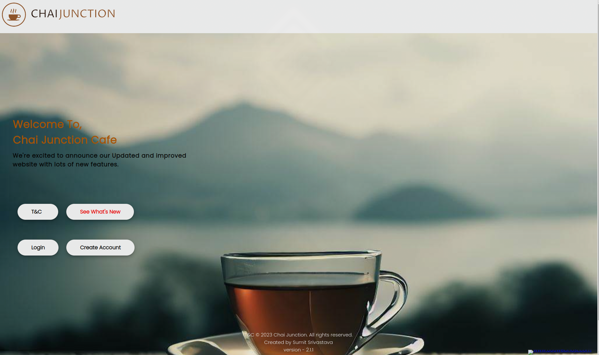
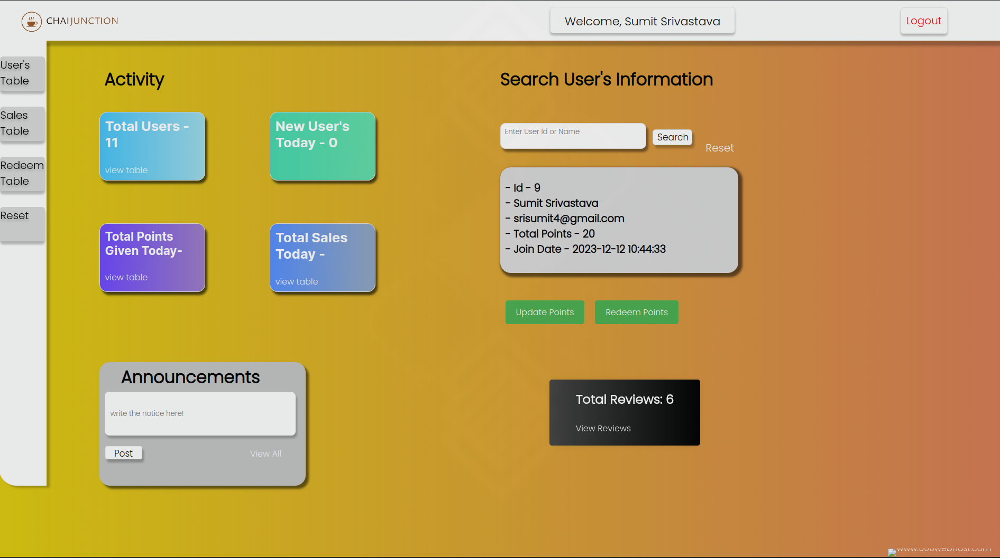
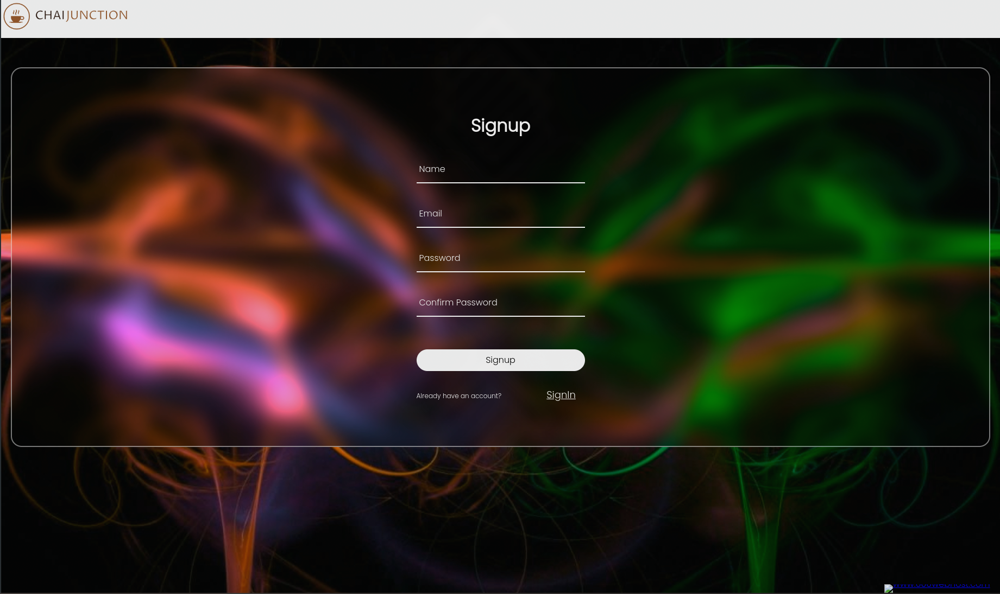

Project Overview
Inner Circle CRM is a comprehensive customer relationship management system specifically designed for Chai Junction Cafe. This web application aims to enhance customer engagement and streamline cafe management through an innovative loyalty program and efficient management tools.
Purpose
The primary purpose of Inner Circle CRM is to provide a loyalty program where customers earn points on their purchases, which they can later redeem for discounts or free items. This system encourages repeat business and enhances customer satisfaction. Additionally, the CRM system helps the cafe manage customer data, track purchase history, and analyze customer behavior for better service delivery.
Features
- Customer Registration and Login: Users can create an account, log in, and manage their profiles.
- Points Accumulation: Customers earn points based on their purchase amounts, with specific criteria determining the points awarded.
- Points Redemption: Points can be redeemed on specific days (e.g., Sundays or the last date of the month) for discounts or free items.
- Exclusions: Certain items are excluded from the points program, ensuring fair and balanced rewards.
- Admin Dashboard: Cafe managers can access an admin dashboard to monitor customer activities, manage the loyalty program, and generate reports.
- Responsive Design: The application is designed to be responsive, ensuring a smooth experience on both desktop and mobile devices.
Technologies Used
- HTML
- CSS
- JavaScript
- PHP
- MySQL
- JavaScript libraries for enhanced performance and styling
Images
This image showcases the user interface of the Inner Circle CRM application, where customers can view their points balance, redeem rewards, and access other features.
This image displays the admin dashboard, providing cafe managers with insights into customer activities, loyalty program performance, and other key metrics.
This image shows the customer registration form, where new users can create an account and start earning points.
Development Process
The development of Inner Circle CRM involved several stages:
- Requirement Analysis: Understanding the needs of Chai Junction Cafe and defining the scope of the project.
- Design: Creating wireframes and mockups for the user interface, focusing on a clean and intuitive design.
- Implementation: Writing code for the frontend and backend, integrating the MySQL database, and ensuring secure data handling.
- Testing: Conducting thorough testing to identify and fix bugs, optimize performance, and ensure a smooth user experience.
- Deployment: Deploying the application on a web server and configuring it for public access.
Usage
To use the Inner Circle CRM web application, customers need to register and create an account. Once logged in, they can start earning points on their purchases. The system automatically calculates and awards points based on the purchase amount, with specific items excluded from the program. Customers can redeem their points for discounts or free items on designated days, making their visits to the cafe more rewarding.
Benefits
- For Customers: A rewarding loyalty program that enhances their experience and encourages repeat visits.
- For Cafe Management: Efficient tools for managing customer relationships, tracking purchase history, and analyzing customer behavior to improve service quality.
Project Impact
The implementation of Inner Circle CRM at Chai Junction Cafe has resulted in increased customer retention, improved customer satisfaction, and streamlined management processes. The loyalty program has been well-received by customers, contributing to a stronger sense of community and loyalty towards the cafe.
Explore the Application
To experience the Inner Circle CRM web application,
Conclusion
Inner Circle CRM has proven to be a valuable asset for Chai Junction Cafe, enhancing customer engagement and streamlining cafe operations. The project demonstrates my ability to develop robust web applications that meet specific business needs and deliver tangible results.